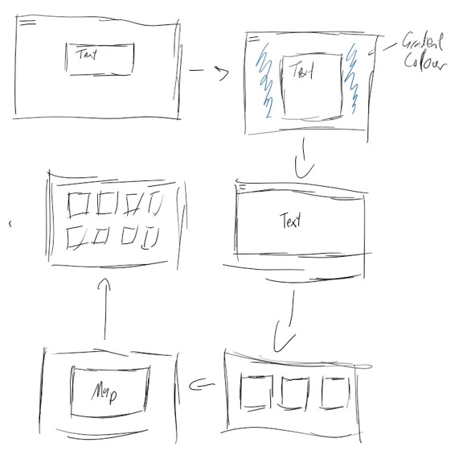
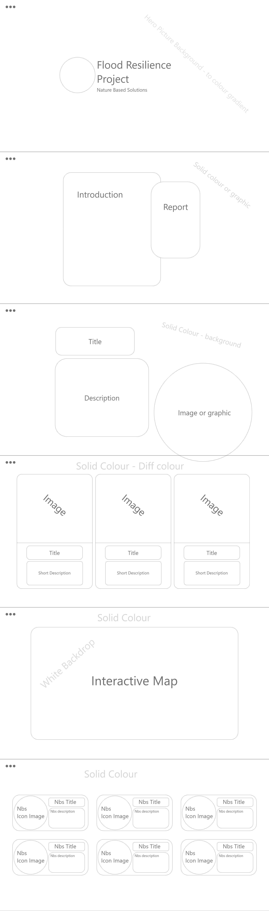
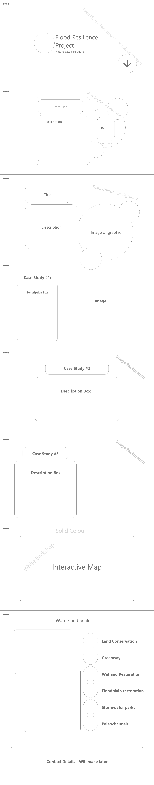

NbS Website
The final project in this portfolio currently is another website that was created in a group project. For this group project we were tasked with creating a homepage of a website for a client with a large focus on scrollytelling elements. For this group project I will just focus on elements that I created for the project. My role in this project was the main coder and wireframe creator.Documentation
So, the first stage in this project for me was creating a first draft of the wireframes, which for me always starts with a sketch on to see if like the general placing of things.First wireframe

After this first wireframe comes the first low fidelity wireframes that helps solidified the locations of elements and the overall design. This version doesn’t have any colours at this stage.
Second Iterations of Wireframes


After this comes a high fidelity wireframe, this wireframe comes with full colours and a stronger sense of where all the elements will be. Changes still can be made to this wireframe.
High fidelity Wireframes


Final Wireframe

There will still be some differences between the wireframe and final website due to changes in perspective and other factors. Once all the wireframes where fully completed, my focus was fully on coding like before it was an iterative process where little documentation was done, but a history of commits can be found on the GitHub to see the website develop.